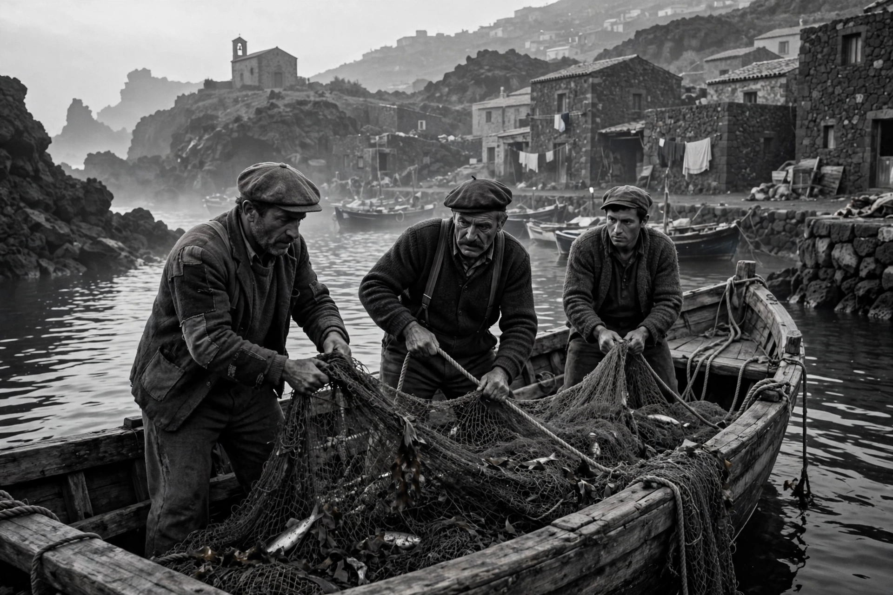

| La Terra Trema | |
|---|---|
 Fishermen of Aci Trezza, Sicily | |
| Directed by | Luchino Visconti |
| Written by | Luchino Visconti, Antonio Pietrangeli |
| Based on | I Malavoglia by Giovanni Verga |
| Release date | 1948 |
| Country | Italy |
| Language | Sicilian |
La Terra Trema (English: The Earth Trembles) is a 1948 Italian neorealist film directed by Luchino Visconti. It is a loose adaptation of Giovanni Verga's 1881 novel I Malavoglia (The House by the Medlar-Tree), the first volume of Verga's planned "Cycle of the Defeated." The film was shot on location in the Sicilian fishing village of Aci Trezza using non-professional local fishermen as actors, speaking in the Sicilian dialect, and is considered one of the masterpieces of Italian neorealism.
The Valastro family are poor fishermen in Aci Trezza, dependent on wholesalers who control the price of their catch. The eldest son, 'Ntoni, returns from military service determined to break the family's dependence on the wholesalers by mortgaging the family house to buy their own boat and sell the fish themselves. After initial success, a storm destroys the boat, and the family, unable to repay the mortgage, loses their home. One daughter is drawn into disgrace, a brother leaves for the mainland, and 'Ntoni, defeated, is forced to return to work for the very wholesalers he tried to escape.
Visconti originally planned the film as the first part of a trilogy about Sicily — fishermen, peasants, and miners — of which only the fishermen's episode was completed. The production was partly financed by the Italian Communist Party. Visconti cast actual fishermen and their families, rehearsing them in their own homes and boats. A voice-over narration in standard Italian, spoken by Visconti himself, explains the action to audiences unfamiliar with Sicilian.
The film premiered at the Venice Film Festival in 1948, where it won an international prize. Although a commercial failure on release, it is now routinely ranked among the greatest films ever made, noted for its deep-focus compositions, long takes, and unflinching portrait of economic exploitation. It strongly influenced later Italian cinema, including Pier Paolo Pasolini's early work.